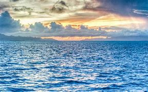
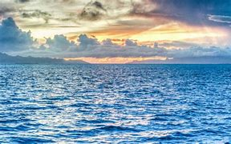
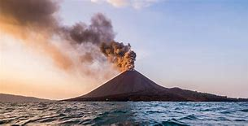

Oceanen
Heel dankbaar onderwerp: 70% van de aarde bestaat uit oceaan. Toch? Of is dat zo'n nutteloos feitje dat ruimte in mijn brein opneemt en niet eens waar is?
Op mijn website zul je een verzameling van losse flodders van informatie vinden. Ik heb 3 subpagina's gemaakt met informatie van Wikipedia, die zelfs niet voldoende zouden zijn voor een spreekbeurt op de lagere school. Het geeft me wel de kans om wat tekstblokjes te vullen en bijbehorende plaatjes te zoeken. Dus, kijk vooral niet naar wat er staat, maar hoe het er staat!
Heel dankbaar onderwerp: 70% van de aarde bestaat uit oceaan. Toch? Of is dat zo'n nutteloos feitje dat ruimte in mijn brein opneemt en niet eens waar is?
Ik weet helemaal niets van vliegtuigen. Behalve dat ik erin zitten niet leuk vind, omdat ik nou eenmaal een controlfreak ben en in de lucht heb je zeker weten helemaal niks onder controle.
Volgens mij heeft mijn kind een keer een werkstuk over vulkanen gemaakt. Wie niet? Ik weet zeker dat er dus veel informatie te knippen en plakken valt.
Een vulkaan is een opening in het oppervlak van een planeet waar gesmolten gesteente (magma), gas en brokstukken van vast gesteente (tefra) door naar buiten komen. Rond zulke openingen wordt vaak met dit materiaal een berg gevormd. Men sprak daarom vroeger van een vuurspuwende berg. De momenten waarop materiaal door een vulkaan wordt uitgestoten worden uitbarstingen of erupties genoemd.
Op de Aarde worden vulkanen vooral aangetroffen in gebieden waar tektonische platen aan elkaar grenzen, dus de plaatsen waar ook aardbevingen voorkomen. Een uitzondering hierop vormen hotspots. Dit zijn gebieden waar heet materiaal uit de mantel door de aardkorst heen naar boven komt. Naar schatting zijn er wereldwijd zo'n 1500 actieve vulkanen op land, waarvan ca. 55 jaarlijks tot uitbarsting komen.[bron?]
Vulkanen komen ook op andere steenachtige planeten en manen binnen het zonnestelsel voor. Zo zijn op de planeten Venus en Mars en de manen Io, bij Jupiter, en Triton, bij Neptunus, vulkanen waargenomen. Van de laatste twee wordt vermoed dat ze vloeibare stikstof of methaan uitstoten, het vulkanisme waarbij dit optreedt wordt cryovulkanisme genoemd.
De wetenschap waarbij vulkanen en aan vulkanisme gerelateerde verschijnselen worden bestudeerd, heet vulkanologie. Vulkanische vlakten, geisers, warmwaterbronnen en kokende modderbronnen zijn verschijnselen die in de buurt van vulkanen kunnen worden aangetroffen, maar omdat ze geen uitgesproken reliëf kennen zijn het geen vulkanen. Ze ontstaan doordat de aardkorst in de buurt van vulkanen dunner is dan op andere plaatsen.